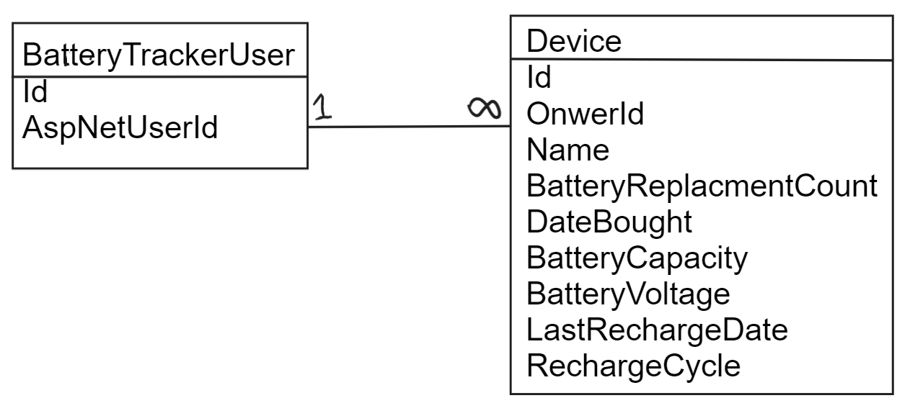

This website is about tracking the charge of old device batteries to maintain their lifespan. Users can log in to add devices and see which devices need to be recharged.
The goal was to get more familiar with ASP.NET Core MVC web framework. I have some experience with ASP.NET MVC so most of my focus was on understanding some of the changes between the two.
The main language I used was C#. ASP.NET Core MVC web framework was used and Visual Studio 2021 was my IDE. I also use SQL Server with SQL Management Studio.
I used a database first approach so one of my first task was just setting up a database. The database was pretty simple with just 2 table. The tables were BatteryTrackerUser and Device. I provided a diagram of them. After that I used SQL management studio to make the database.

On visual studio I created a project with the template "ASP.NET core Web App (MVC)." I also set the Authentication type to "Individual Account."
The next step was to download all the necessary Nuget packages. With Visual Studio I can just select the "Nuget Packet Manager" option in the top "Tools" bar to add them. With the Nuget Packet Manager command prompt I can just run the following command to get what I need:
Install-Package Microsoft.EntityFrameworkCore.Tools
Install-Package Microsoft.EntityFrameworkCore.SqlServer
Step to take for setting up connection string:
// Example connection string code
"ConnectionStrings": {
"DatabaseName": "Enter connection String here"
}
I then generated the models and context class using the database. I first go to the "Package Manager Console" and enter the following command to generate what I need:
Scaffold-DbContext Name=BatteryDBConnection Microsoft.EntityFrameworkCore.SqlServer -Tables
BatteryTrackerUser, Device -OutputDir Models -ContextDir Models -Context BatteryContext
This will generate 2 tables (BatteryTrackerUser and Device) and a model context (BatteryContext) in the Models folder.
I have a separate user table called "BatteryTrackerUser" that will need to be created at the same time the user makes an account. My intention in doing this was to keep some of the auto generated user stuff separated from my application. Now since the auto generated user files are abstracted away I will need to generate the files I need first. Here the are step to do this:
I then needed to add the database context I created to the register page in order to have access to the "BatteryTrackerUser" table. A few things will need to be edited to make this work. I first went to the register.cs file (located in Areas/Identy/Pages/Account/Register file with the cs file being a dropdown from register.cshtml file.) I then Added the "BatteryContext" at the top of the page which is setup though Dependency Injection. This involves adding a private readonly BattteryContext variable, BatteryContext parameter to RegisterModels method, and set private BatteryContext variable to passed in parameter. Thirdly I removed some of the connection code in "BatteryContext" and move it to the Program.cs file. Section to remove and add shown shown here:
//Removed from BatteryContext.cs
protected override void OnConfiguring(DbContextOptionsBuilder optionsBuilder) =>
optionsBuilder.UseSqlServer("Name=BatteryDBConnection");
// Added to Program.cs File
var connectionString = builder.Configuration.GetConnectionString("BatteryDBConnection");
builder.Services.AddDbContext(options => options.UseSqlServer(connectionString));
builder.Services.AddDbContext(options => options.UseSqlServer(connectionString));
builder.Services.AddDatabaseDeveloperPageExceptionFilter();
Finally I created a "BatteryTrackerUser" in the register page. In the register page we go to the "OnPostAsync" method and before the email sender send an email we add the following:
// Create BatteryTrackerUser in Register.cs
var batteryTrackerUser = new BatteryTrackerUser { AspNetUserId = userId };
_batteryContext.BatteryTrackerUsers.Add(batteryTrackerUser);
await _batteryContext.SaveChangesAsync();
With that the BatteryTrackerUser is created on register of a user.
The next step is to scaffold CRUD pages for a device. Steps:
I then needed to make sure devices can only be handled by logged in users and that they cant access each others. I first restrict device page access to logged in users. This can be done by adding the Authorize attribute above every method involving a device. I then dealt with users restricted to just their own devices. To accomplish this I added a quick check in most device method to compare the id of the current user with the id owner of the device it is trying to access. It will then redirect if there is a mismatch. Example shown:
// User check in DevicesController.cs
var deviceUserId = _context.Devices.Include(d => d.Owner).First(i => i.Id == id).Owner!.AspNetUserId;
var loggedInUserId = User.FindFirstValue(ClaimTypes.NameIdentifier);
if (loggedInUserId != deviceUserId)
return RedirectToAction(nameof(Index));
Similar checks were also added to view and create devices but were a bit more simpler.
The last main feature is the "ChargeTimes" page. This is a page that will inform the user about if a device they own needs to be recharged. The page displays the days since the last charge (current date - last charge date) as well as the time span the battery can last without charge (Note: last charge date and charge time span are both fields for a device). It will also color coat the text red if the days since last charge is larger than the time span.
The first part is to setup a view model for the necessary data since I don’t need all the data of a device and I will also need another field for days since last change(which isn't in the Device Model.) Steps:
Now that I have the ViewModel done I can setup the ChargeTimes page. I began by copying the layout of the index page in the DeviceController. The Device index page and the ChargeTimes page are similar in that they both display a list of a model type. The big difference is setting up the data for the RechargeDeviceDetails model in ChargeTimes. This is done with a Linq query where most of the values are passed by a device and the days since last charge is calcualted. Example of this code:
// Section of ChargeTimes method in DevicesController
var currentDateDays = DateOnly.FromDateTime(DateTime.Today).DayNumber;
var batteryChargeDetails = batteryContext.Select(
i => new RechargeDeviceDetails {
Id = i.Id, Name = i.Name,
LastRechargeDate = i.LastRechargeDate,
RechargeCycle = i.RechargeCycle,
DaysSinceLastRecharge = currentDateDays - DateOnly.FromDateTime(i.LastRechargeDate).DayNumber });
I also wanted to briefly show how the text becomes colored red when it needs a charge. This one is just a simple if statement that will add a class that color coats the text if added. Example:
// Section in ChargeTimes.cshtml
<h2 class="@(item.DaysSinceLastRecharge >= item.RechargeCycle ? "alertText" : "" )">
@item.DaysSinceLastRecharge / @item.RechargeCycle days
</h2>
My previously experience with ASP.Net MVC has really made using ASP.Net Core MVC a lot easier. Many of the concepts were the same but a lot of how to set things up has changed. For example, some of the scaffolding has become more command line oriented to use, when you use the auto generated account stuff the files aren't there by default, configuration setting have moved files, and etc. I wanted to also mention that a lot of the changes weren't intuitive to figure out and required me to look up various tutorials to solve. This definitely cost me a good amount of time to figure out but I think most of the changes kind of made sense. Like abstracting away the auto generated user account files does make the files cleaner when you don’t have a lot you won't really edit. Using dependency injection by default was also pretty cool given that it will also make testing easier in the future. I also feel like you have more control with the command line approach in scaffolding models and context.
Back to Projects